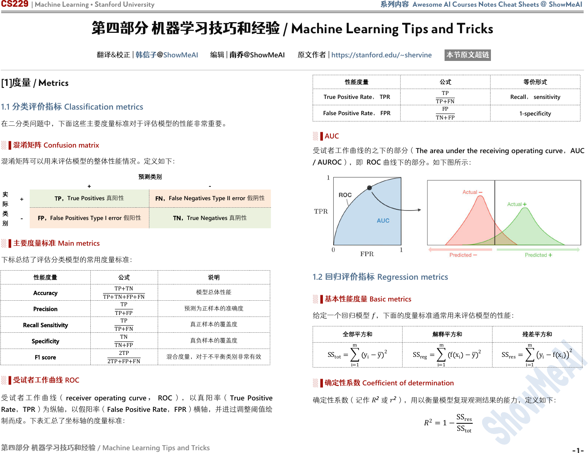

CS229 | Machine Learning • Stanford University 系列内容 Awesome AI Courses Notes Cheat Sheets @ ShowMeAI
第四部分 机器学习技巧和经验
/ Machine Learning Tips and Tricks
第四部分 机器学习技巧和经验
/ Machine Learning Tips and Tricks
翻译&校正 | 韩信子@
ShowMeAI
编辑 | 南乔@
ShowMeAI
原文作者 |
https://stanford.edu/~shervine
本节原文超链
[1]度量 / Metrics
1.1 分类评价指标 Classification metrics
在二分类问题中，下面这些主要度量标准对于评估模型的性能非常重要。
░▐ 混淆矩阵 Confusion matrix
混淆矩阵可以用来评估模型的整体性能情况。定义如下：
FN，False Negatives Type II error 假阴性
FP，False Positives Type I error 假阳性
░▐ 主要度量标准
Main metrics
下标总结了评估分类模型的常用度量标准：
░▐ 受试者工作曲线 ROC
受 试 者 工 作 曲 线 （ receiver operating curve ，ROC ） ， 以 真 阳 率 （ True Positive
Rate，TPR）为纵轴，以假阳率（False Positive Rate，FPR）横轴，并进过调整阈值绘
制而成。下表汇总了坐标轴的度量标准：
░▐ AUC
受试者工作曲线的之下的部分（
The area under the receiving operating curve
，
AUC
/ AUROC
），即
ROC
曲线下的部分。如下图所示：
1.2 回归评价指标 Regression metrics
░▐ 基本性能度量 Basic metrics
给定一个回归模型
，下面的度量标准通常用来评估模型的性能：
░▐ 确定性系数
Coefficient of determination
确定性系数（记作
2
或
2
）
，用以衡量模型复现观测结果的能力，定义如下：
2
=1−
SS
res
SS
tot